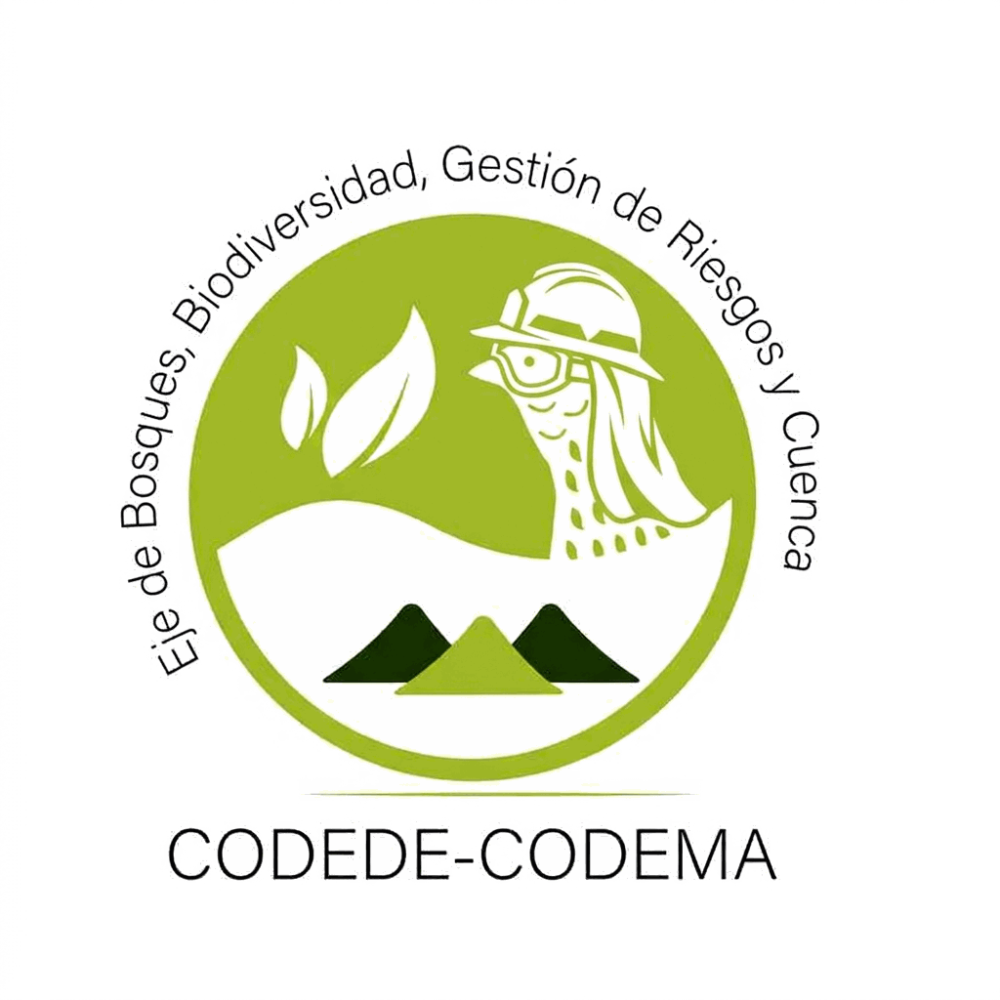
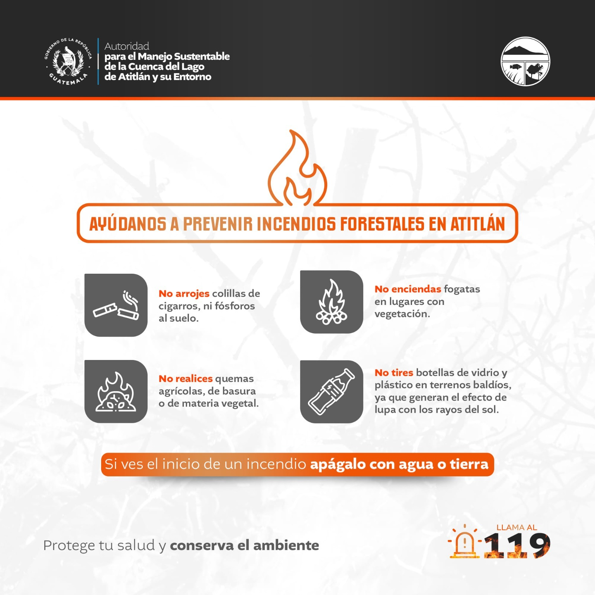
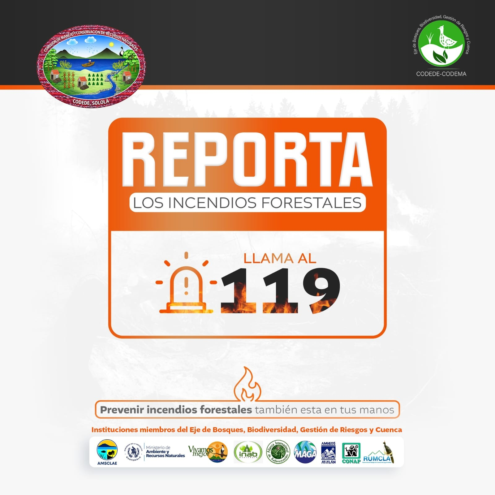

El Eje de Bosques integra detecciones satelitales de fuego activo en tiempo casi real y las transforma en información territorial útil para que tu institución pueda actuar. Cada foco de calor que ves en esta plataforma fue procesado, recortado y analizado por el equipo del Eje para apoyar la coordinación, priorización y respuesta ante incendios en Sololá.



Visualiza, analiza y coordina — todo a partir de datos procesados por el Eje de Bosques.
Visor SIG cuasi en tiempo real con filtros por periodo (24h / 72h / 7d / 30–90d) y sensor. Recorte por municipios, microcuencas y áreas protegidas. Incluye KPIs, gráficas y descarga de tabla.
Abrir GeoportalSíntesis del periodo con indicadores clave y notas técnicas elaboradas por el Eje para lectura rápida y comunicación institucional. En desarrollo.
PróximamenteReportes del Eje por municipio, microcuenca y área protegida, con tablas exportables y mapas para apoyar la coordinación interinstitucional. En desarrollo.
PróximamenteDetrás de cada punto en el mapa hay un flujo técnico que el Eje mantiene para que los datos lleguen a tiempo y con calidad.
Para que los focos de calor tengan contexto de gestión, el Eje los interpreta junto con estas unidades territoriales:
Las capas se publican como GeoJSON y se usan para recorte espacial y estadísticas por zona, permitiendo reportes comparables entre periodos.
El Eje no solo muestra puntos — analiza dónde se concentran, con qué frecuencia y qué unidades territoriales requieren atención prioritaria.
El módulo permite ubicar concentraciones de focos de calor por periodo y evaluar consistencia por sensor. La lectura territorial que genera el Eje prioriza zonas recurrentes y facilita la coordinación entre instituciones para verificación y respuesta.
Lectura espacial rápida preparada por el Eje para apoyar la coordinación institucional: "dónde, cuánto, cuándo y con qué confianza", con evidencia estadística básica lista para reportar.
El Eje aplica análisis geoestadístico para que los datos de detección vayan más allá de la visualización y apoyen decisiones con fundamento técnico.
La geoestadística permite al Eje responder si las detecciones se comportan como un patrón aleatorio (CSR) o si existe agrupamiento significativo a ciertas escalas. También resume dispersión (SDE) y continuidad de FRP (variograma) para apoyar la interpretación operativa.
Estos resultados apoyan la interpretación del Eje, pero no sustituyen verificación en campo ni análisis de combustibles y cobertura forestal.